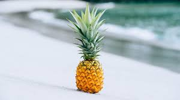
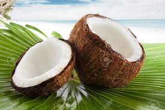

Historians believe that pineapples originated in Brazil in South America.
It was imported to Europe later. It is also believed that Christopher Columbus and his crew members were
probably the first few people from the European continent to have tasted the fruit.

The history of coconuts is believed to have started thousands of years ago in the islands of the Western
Pacific and eastern Indian oceans. Carried firstly by ocean currents then by humans, coconuts spread
throughout the humid tropics and beyond.
Portuguese sailors brought bananas to Europe from West Africa in the early fifteenth century. Its
Guinean name banema, which became banana in English, was first found in print in the seventeenth century.
The original banana has been cultivated and used since ancient times, even pre-dating the cultivation of rice.
Kiwifruit is native to north-central and eastern China. The first recorded description of the Kiwifruit
dates to 12th century China during the Song dynasty. As it was usually collected from the wild and consumed for
medicinal purposes, the plant was rarely cultivated or bred.